T2 HEART · 2026-11-16 · 六问版
从细胞状态到观察过程
读懂官方心脏数据
我们在五个时期、328,858 个细胞中，发现了基因特异的状态转换、晚期空间关联，以及检出和阳性强度两层联合结构。下面用六个问题串起这些发现，并说明如何使用这些认识。
研究范围：T2 心脏 E8.25_late、E8.5、E8.75、E9.5、E10.5。每时期一份发布标本；证据主要描述这些样本内部的规律。六个问题沿用既有统计；第七节补充了本次新做的逐基因类型、时间与空间筛查。
问题 01 · 发育变化是一条共同的“成熟轴”，还是不同细胞群各自变化？
数据呈现基因特异的状态转换，适合用多种程序共同描述
我们发现，同一类心肌细胞中的结构相关基因走向不同：E9.5 到 E10.5，Ttn、Myh7 下降，Myl4 上升。保留这些不同方向，比用一个共同升降的成熟分数更贴近实测数据。
20.8% → 42.5%
Myh7 未检出、Myl4 检出的心肌占比
33.0% → 20.1%
Myh7、Myl4 双检出的心肌占比
Ttn 的变化分解进一步显示：已知心肌亚标签的组成项为 +18.4，亚标签内项为 −556.6。因此，在现有标签粒度下，主要变化发生在标签内部。Myh7 与 Myl4 的亚标签内变化方向也相反。
五时期的可测程序呈现不同时间走势。心肌四结构成员的平均 log1p 表达依次为 5.62、5.66、5.77、4.51、3.88；三周期成员依次为 1.36、1.67、0.56、0.36、0.16。我们据此把“程序变化”和“细胞成熟”分开表述，逐程序解释其时间特征。
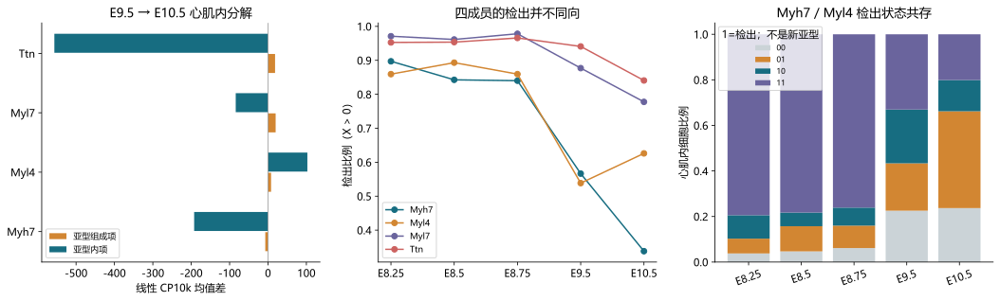
先看检出组合的比例变化，再看组成与亚标签内贡献：两者共同揭示状态转换发生在哪里。 点击图表可查看原图。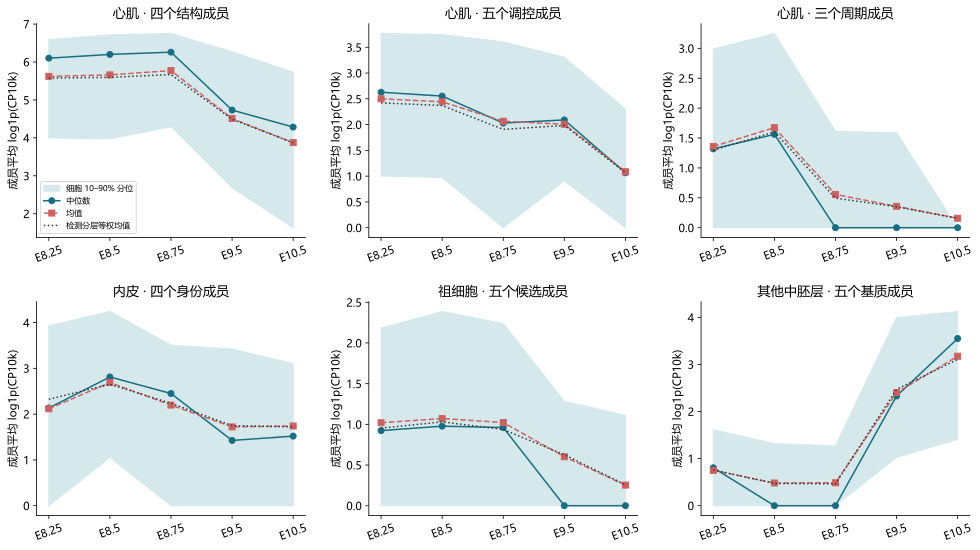
沿时期比较同一程序，再比较程序之间的走势；色值代表本面板可测成员的表达。 点击图表可查看原图。可以怎么用：可以分别保留程序分数、基因方向和检出组合，并记录早晚状态各自的比例，让状态异质性成为数据表示的一部分。
证据范围：证据支持这些样本内的多程序差异。独立发育轴的数量、跨胚胎重复性及绝对转录变化仍待验证；Unknown 亚标签保留了尚未细分的混合状态。
问题 02 · 细胞比例之外，是否存在稳定的组织构成关系？
我们找到比例变化的范围依赖性：组成应与采样范围一起解释
E9.5 到 E10.5，心肌细胞的回收数量增加，同时它在全样本中的占比下降。把统计范围限制到心肌近邻后，下降幅度明显缩小。这说明组织构成的解释需要同时保留细胞数、分母和空间范围。
69.4% → 58.0%
心肌近邻 k=15 候选范围内比例
全文件比例下降 15.4 个百分点，近邻候选范围内下降 11.4 个百分点；两个口径保留同一方向，但描述了不同的组织支持范围。回收细胞数则为我们提供了比例之外的另一条信息。
标签核查发现，补入 cm 心肌候选仅改变 E10.5 的三个细胞，对晚期差异的解释很小。当前证据最支持“条件于范围的组成描述”；固定的组织比例关系仍是待验证问题。
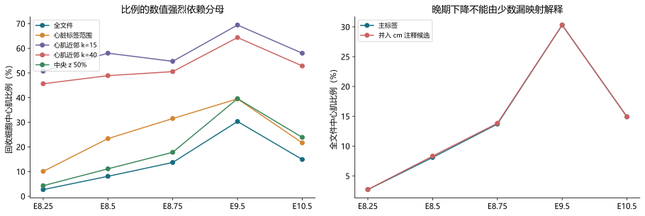
把全文件组成、候选支持范围和回收数量一起读：比例与数量回答不同的问题。 点击图表可查看原图。可以怎么用：可以为每份数据同时保存全样本组成、明确范围内组成和类型内状态组成；比较两个时期时先对齐统计口径，再解释变化。
证据范围：心肌近邻由心肌标签选出，天然富集心肌，是范围敏感性对照。真正共同解剖区的比例和稀有群体的跨胚胎稳定性仍需独立证据。
问题 03 · 空间位置是否解释了同类型细胞的不同状态？
晚期心肌的局部邻域为状态差异提供额外解释
在 E9.5、E10.5，加入邻域细胞构成后，空间块留出分析对心肌结构成员表达的解释能力提高。这个关联在两种邻域尺度和内部细胞检查中保持同向。
+0.101
E9.5 加入邻域后的 ΔR²，k=15
+0.062
E10.5 加入邻域后的 ΔR²，k=15
93.8% / 76.9%
两时期获得改善的留出块比例
比较从细胞标签和检出特征出发，加入低阶位置项，再加入邻域构成。邻域带来的增量说明，晚期同类型细胞的表达差异与局部组织结构相联系。
这一关系具有时期条件：E8.25 的增量为负，E8.75 的内部细胞结果较不稳定。我们因此把它定位为晚期样本中的条件关联，并为各时期分别保存空间结构。
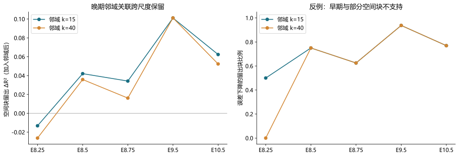
看加入邻域后的增量及不同空间块的一致性；正值表示留出分析得到改善。 点击图表可查看原图。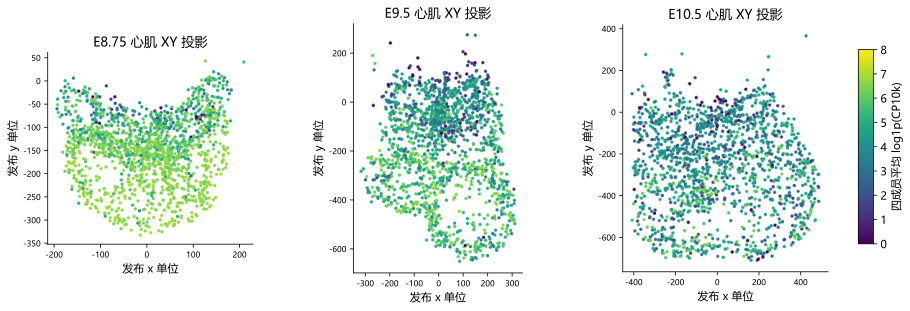
用固定色标观察心肌状态在 XY 投影中的分布，再结合邻域分析理解局部差异。 点击图表可查看原图。可以怎么用：可以联合保存细胞类型、表达状态与邻域构成；研究晚期心肌异质性时，把局部组织位置作为重要条件。
证据范围：增量相对于低阶位置基线；邻域可能补充了未充分建模的解剖位置。空间块相邻且无缓冲带，目前证据为样本内关联，因果方向待验证。
问题 04 · “零值、尾部和共表达”究竟包含什么结构？
均值背后有两层信息：哪些细胞检出，以及检出后表达多强
我们发现，不同基因的均值变化由不同部分主导：Ttn 主要改变阳性细胞中的表达强度，Myl7 主要改变检出比例。基因对的联合结构还随时期变化。
−56.3 / −64.1
Myl7 检出项 / 总均值变化，CP10k
Ttn 总均值变化 −538.1 中，检出项为 −90.5，阳性强度项为 −447.6。Myl7 总变化 −64.1 中，检出项为 −56.3。相似的均值下降因而可以对应不同的细胞分布变化。
条件打乱帮助进一步区分共检出与强度协同：早期 Myh7/Myl4 的观察相关高于保零位对照；E9.5 的观察相关 0.103，与保零位对照约 0.103 接近。Top2a/Cdk1 的观察相关也普遍接近保零位对照，提示这些比较中的联合信息主要体现在检出结构。
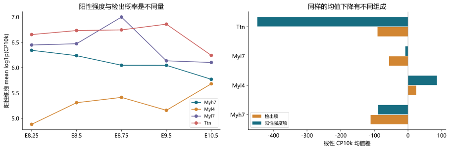
比较每个基因的检出项和阳性项，识别均值变化的主要来源。 点击图表可查看原图。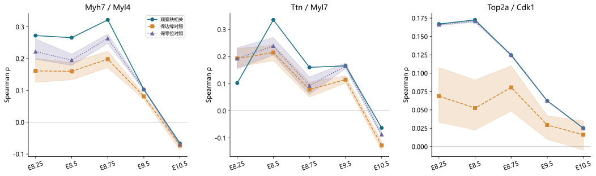
对照整列打乱与只打乱阳性数值：后者保留零位置，有助于定位额外的强度协同。 点击图表可查看原图。可以怎么用：可以分别保留检出比例、阳性表达分位数和基因联合结构；按时期维护这些关系，让单基因分布与多基因组合同时得到描述。
证据范围：置换范围描述条件对照，含小分组和行总量约束的影响。长尾的生物学来源、连续分布双峰及新亚群身份仍待进一步验证。
问题 05 · 哪些变化更像观察过程，而不是发育过程？
我们识别了检测、处理和切片层面的系统差异，并定位到可追查的环节
最明确的线索来自三处：检出水平随时期变化，发布 counts 的整数性质存在差别，切片仍保留条件检测残差。我们还修复了浮点 z 值造成的切片分组问题。
71 → 61 → 52 → 35 → 30
五时期每细胞检出基因数中位数
4.15% / 2.63%
E8.25 / E8.75 阳性 counts 中非整数占比
157 → 44
E10.5 精确 z 唯一值 → 归组后的切片层数
五份 counts 经逐细胞归一到 10,000 再 log1p，可重建发布 X，最大误差为 9.54×10⁻⁷。这个核验让我们可以同时使用发布 counts 和标准化表达分析趋势，并继续追查分数 counts 的处理来源。
控制原始类型和 XY 象限后，逐层检测残差仍然存在，提供了具体的空间检查入口。按核验后的六位小数归组，E8.5、E9.5、E10.5 的切片层数分别为 25、40、44，解决了浮点微差形成伪切片的问题。
尺度检查也保留了部分真实观察趋势：E9.5→E10.5 心肌 Ttn 的发布 counts 均值从 10.33 降至 3.35，Myl4 从 1.19 升至 1.43；替换归一化分母后，四结构成员的汇总下降仍在。由此可继续研究基因特异变化，而不是把所有差异统一归给分母。
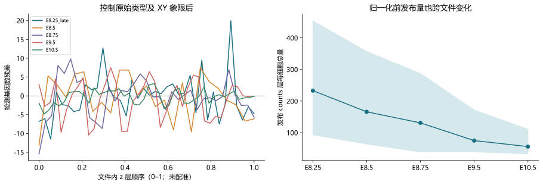
结合检测量、发布 counts 与逐切片残差，定位观察过程在哪些层面变化。 点击图表可查看原图。可以怎么用：可以保存 counts、标准化表达和切片标识三层信息，优先核对处理历史、异常切片和检测结构；对比时期时同步报告这些观察条件。
证据范围：检测变化包含生物学、取材与技术因素。时期和标本绑定，counts 原始处理、探针及分割记录尚缺，因此具体技术原因和贡献比例仍待确认。
问题 06 · 这个面板让我们容易看见什么，又容易误解什么？
面板支持成员级状态比较；覆盖表与剔除检查帮助确定结论强度
我们确认四个结构成员的晚期汇总下降具有成员剔除稳健性，同时识别了周期和 S 期先验集合的覆盖缺口。面板最适合支持的是已测成员及其组合的变化。
逐一剔除四结构成员后，其余成员的平均 log1p 差均为负，范围为 −1.106 至 −0.354；这一结果说明汇总下降得到多个已测成员支持。Myl4 单独上升，则保留了成员之间有价值的方向差异。
上述分母来自本轮选定的先验集合。将覆盖率、逐基因方向和剔除结果一起呈现，可以区分“多成员支持的表达变化”与“只有少数标记可观察的过程”，并为后续补充测量确定具体目标。
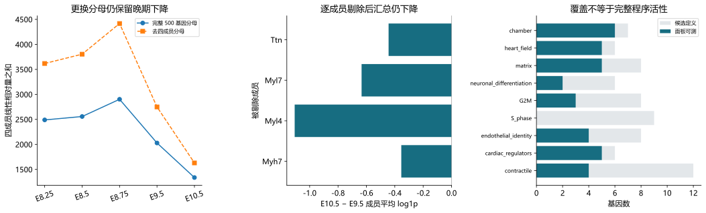
看每次去掉一个成员后趋势是否保留，再结合覆盖数字解释结论的适用范围。 点击图表可查看原图。可以怎么用：可以给每个状态或程序附上覆盖成员、独立标记支持和敏感性结果；用“已测成员相对表达变化”精确命名当前发现。
证据范围：覆盖数字针对所选集合；完整收缩功能、S 期活动及作者逐基因选入动机仍需额外证据。当前成员级稳健性与完整功能验证分别评价。
500 基因：类型、时间与位置三条轴
本节逐一检查官方五份心脏数据中共同测到的 500 个基因。三种性质允许重叠：“类型指向持续”表示它在五期均以同一粗类型的表达最高；“时期相关”表示同一类型内随五期有稳定顺序变化；“局部空间关联”表示同类型细胞中邻近位置比同切片随机位置更相似。
本次实际筛查：45 个基因持续指向同一类型；81 个基因在至少一种类型中有时期相关候选；140 个基因在至少一种类型中有重复出现的局部空间关联；57 个基因满足两条或三条轴。表达量与检出率同时严格稳定的基因数为 0。
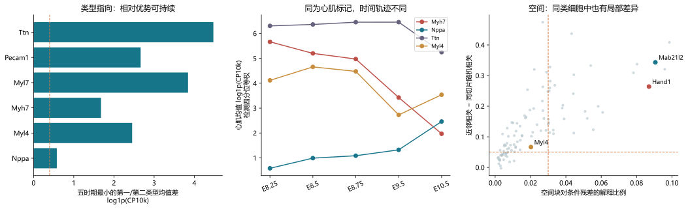
橙色虚线为本次筛查的描述性阈值；空间分类还要求峰值空间块至少有 50 个细胞。每个数字对应发布样本，曲线不含胚胎级误差条。交互总表 · 完整 500 基因台账 · 筛查定义
几个具体基因
类型指向、时期变化和位置富集可以同时存在。例如 Myh7 始终偏心肌，表达量随五份样本递减；Hand1 的最高粗类型是心包/心外膜，同时在心肌细胞内部有重复的局部关联。早期与晚期坐标各自成系，空间支持期数只比较关联是否出现。
实际切片中的局部信号
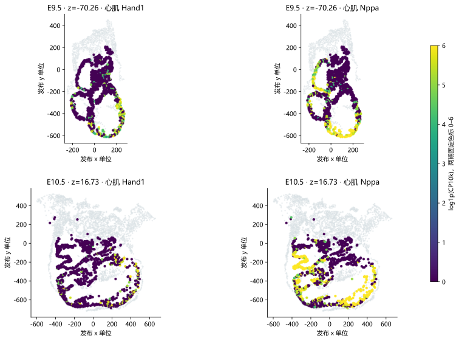
每时期选取心肌数量充足且最靠近心肌 z 中位数的一张切片。灰点是其他类型，彩色点是心肌；两个时期共用 0–6 的 log1p(CP10k) 色标。图显示样本内的局部分布，空间统计使用全部已抽样心肌及切片。发布 x/y 单位尚未认证为微米。
G1 · 探索性数据结构45 个持续指向同一粗类型的基因
观察：五期中，Ttn、Myh7、Myl4 始终以心肌均值最高；Pecam1、Cdh5 以内皮/心内膜最高。Ttn 五期最小的领先差仍为 4.47 log 单位。
可采取的动作：将这些基因用作该类型的相对定位线索，同时逐时期保存各自检出率和强度。
反例与范围：45 个中没有基因达到预登记的严格表达量稳定阈值；原始类型标签可能沿用同一标记。
逐基因结果表G2 · 探索性数据结构81 个基因呈现类型内时期相关候选变化
观察：心肌 Myh7 五期平均 log 表达约 5.69→1.95，Nppa 约 0.62→2.46；两者质量分层等权后趋势方向保留。Myh7 早两期与晚两期均值差 -2.73，Nppa +1.11。
可采取的动作：按具体类型和基因记录时序曲线，并同步查看检测率、发布 counts 和类型内亚群。
反例与范围：Ttn 的 E9.5→E10.5 下降很强，但五期并不形成平滑单调趋势；Myl4 在 E10.5 回升。
逐基因结果表G3 · 探索性数据结构140 个基因出现可重复的类型内局部空间关联
观察：心肌 Hand1 在五期均通过条件空间阈值，空间块解释比例中位数 0.087，近邻相关相对随机位置多 0.346；内皮/心内膜 Cldn5 在 3 期通过。
可采取的动作：为这些候选保留样本内位置、切片和邻域；先按具体区域复核，再研究细胞边界和相邻类型。
反例与范围：Myl4 在心肌中有强类型指向，但只在 0 期通过两个空间条件；因此类型特异性不自动意味着局部聚集。
逐基因结果表“保守”在此仅指五期相对类型指向持续。500 个基因均在台账，未入选的基因也保留其效应值。时期与标本一一对应；类型标签、取材、归一化和检测可能共同影响这些候选。下一轮最直接的复核是取得同一期独立标本，并使用独立解剖区域与标签检验这些具体基因。
把发现转成六条数据使用原则
| 细胞状态 | 联合保存基因方向、程序分数和状态比例。 |
|---|
| 组织组成 | 把比例与统计分母、空间范围、回收数量放在一起。 |
|---|
| 空间结构 | 为晚期心肌保留状态与邻域的条件联系。 |
|---|
| 表达分布 | 分别保存检出、阳性强度和联合表达。 |
|---|
| 观察过程 | 保留发布 counts、标准化表达、切片和处理记录。 |
|---|
| 面板解释 | 给每个程序附上覆盖成员与稳健性证据。 |
|---|